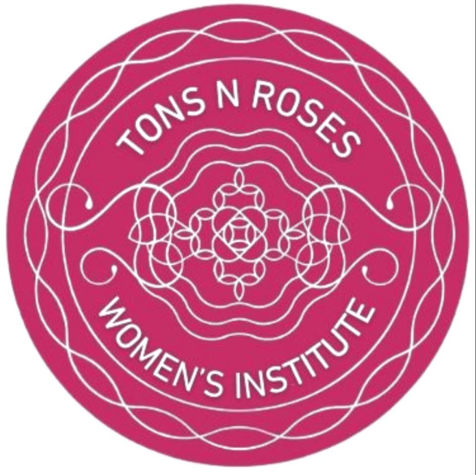

Tons N Roses Women's Institute

Hello Women of Tonbridge!
Tons N Roses WI are a friendly group of women in Tonbridge who come together to learn, create and chat.
Do you fancy trying something different, meeting new people, learning new skills and having some fun?
Come along to our next monthly meeting for a taster of Tons N Roses.
Join us to access all meetings for the year, and our sub-groups for reading, craft, gardening, running, theatre and supper.
Becoming a member of Tons N Roses WI also gives you access to the West Kent Federation of WIs' events, plus the member learning platform VIA.
Information
Monthly Meetings & Venue
We meet on the third Wednesday of every month (except August), from 7:15pm for a 7:45pm start, in Tonbridge.
Venue
The New Telegraph Club
The New Telegraph Club, Priory Road, Tonbridge, TN9 2AS
- A short walk from Tonbridge Station and the town centre
- Full bar with club prices
- Complimentary tea and coffee.
Meetings & Membership
Each month's meeting is on a different topic. Our last three meetings were:
- April 2026: Medical Detection Dogs
- March 2026: Royal women who changed English history - a talk by member Janie
- February 2026: Relaxing Sound Bath, led by Naomi.
For a taster of Tons N Roses before joining, come along as a guest to our next monthly meeting for £5.
Become a member for £54 for the full WI year from April 2026 to March 2027 (pro rata for those joining mid-year).
Contact & Social
Email: info@tonsnroseswi.org
Instagram: @tonsnroseswi
Facebook: Tons N Roses WI
NFWI Profile: Tons N Roses WI
For members: VIA learning VIA Login
Members are invited to join our WhatsApp community with chats for all our sub-groups.